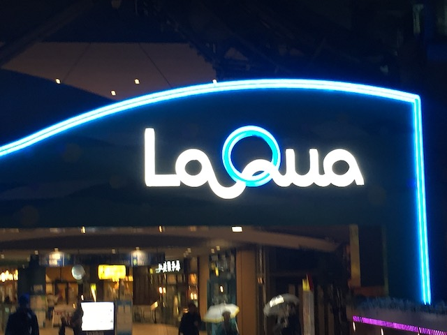
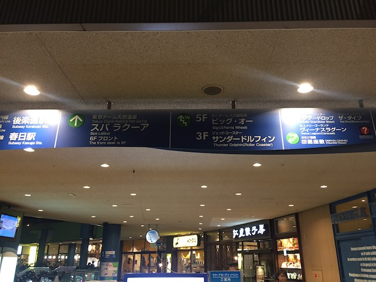
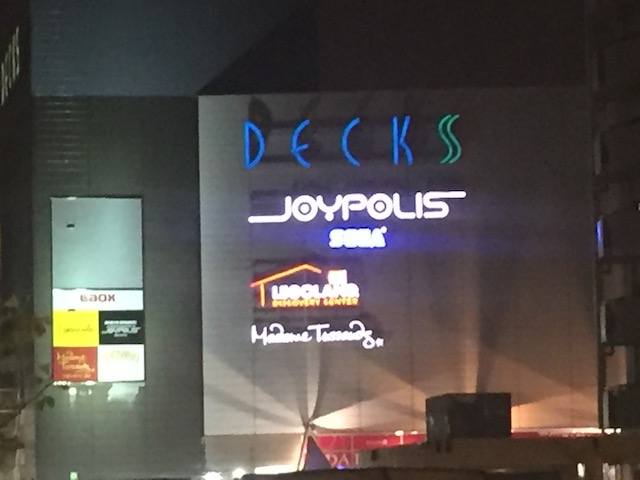
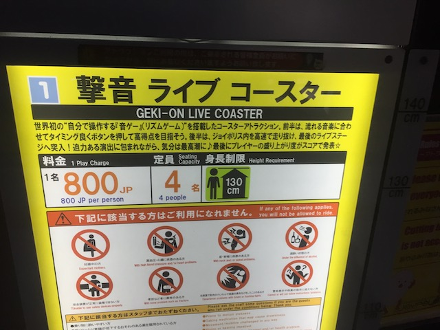
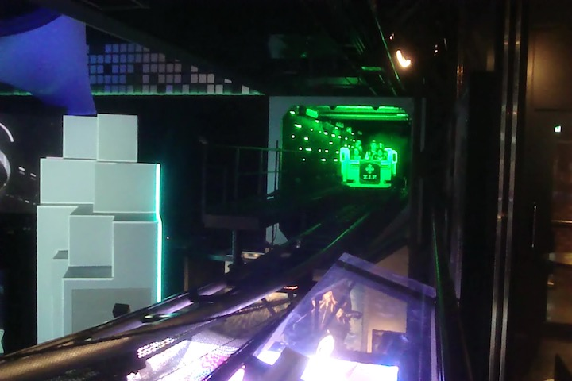
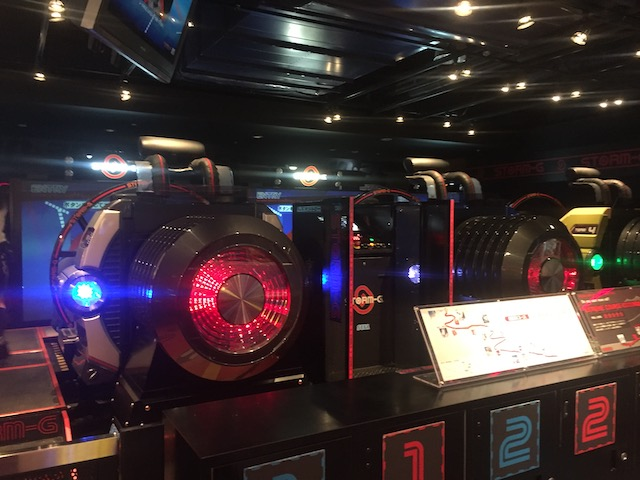

| |
JAPAN 2018!!! =)
Osaka Universal Studios Japan Parque Espana Nagashima Spaland
Hiroshima & Kyoto Tobu Zoo Fuji-Q Highlands
Tokyo Joypolis Tokyo Dome City Yomiuriland Sea Paradise Hamanako Pal Pal Tokyo Disney Resort Yokohama Cosmoworld
Toshimaen
Another day, another drink to try from a Japanese vending machine. Today, we're having Vivit's Soda. Grape flavored. And....this stuff is strong. This stuff doesn't even taste like soda. It just tastes like some took a glass of grape juice, and then carbonated it. It's good. But....not really my thing.
*Sigh* God damn it Google Maps! When I ask for public transportation directions to Toshimaen, I expect you to take me to the front entrance! Not some back ally near peoples homes that takes you to the fence of the back of the park, but does jack-sh*t to actually help me get to the park! Grr!
Hmm. It's quiet here. A little too quiet.
So yeah. Toshimaen is closed today. But it's not a big deal because not only was Toshimaen an optional park, but I wound up going anyways thanks to having an incredibly flexible schedule. Toshimaen was one of two maybe parks for my Japan Trip that I may or may not hit. The other was Himeji Central Park, which I seriously considered visiting and put it as a maybe park. But unlike Toshimaen, which I did visit later on (as noted by the park list at the top), I never got around to Central Park as I decided that I'd rather visit Hiroshima than ride another Batman clone.
So I'm not the biggest fan of your standard courtesy "manners" (Seriously. If you haven't seen it, I HIGHLY recommend the Penn & Teller Bullsh*t episode on Manners). But Japan is such an amazing country, and people are so nice and thoughtful here, that....PLEASE DON'T BE AN ASSHOLE WHEN YOU VISIT!!! Please try and be thoughtful and respectful of customs while here (Be quiet on trains, know the bare minimum amount of Japanese, etc). We already have a bad reputation abroad thanks to our toxic actions over the past few years. So please don't reinforce that idea by going to foreign countrys (Especially foreign countries that are so nice and thoughtful and awesome) and being a loud obnoxious inconsiderate douchebag.
So I snapped this photo, thinking at the time "Boy. Advertising is so much better in Japan. You're actually getting me to care about a f*cking jam ad". To the point where I actually decieded to google Jammu and see what sort of jam this was. Turns out it's not even a jam. It turns out that Jammu is just a cute mascot created by the Tokyo Metro whose sole purpose is (quoting the Tokyo Metro here) "bring a smile to customers packed on commuter trains." DAMN!!! I freaking love Japan! The fact that Tokyo's metro is creating a cute character for the sole purpose of cheering up commuters going to or from work, I just love that. The Metro also claims that "Jammu loves everyone and is loved by everyone". Indeed I do. Rock on Jammu! =)
Oh sh*t! The sky just opened up on us during the metro ride from Toshimaen to Asakusa!
Well, if the only thing we came here for was more temple tourism, then this rain shouldn't be a problem.
No! Of course, we came over here to go to Hanayashiki. But judging by the weather conditions, it looks like we're not gonna be able to get to this park today as well.
Yeah. Not surprising at all. We're gonna have to come back to Hanayashiki another day.
Quick! Into the temple! It will shelter us from the rain!
"Pff! You think water coming down from the sky is a big deal!? Try living in it!"
 Hey look! I found Asakusa's Golden Dragon!
Hey look! I found Asakusa's Golden Dragon!
So I had no idea what the hell this was at the time. I just assumed it to be some sort of religous thing. And I was right. I know I generally don't see the temples as religous sites as when I think of religion, I think of the main Abrahamic Religions (Judiasm, Christinaity, Islam) and that I strongly dislike religion (f*ck all three of them). But yeah. Thanks to Eastern Religions (in this case, these temples are all Buddhist), this temple, as well as all the stuff I saw in Kyoto is just as religous as visiting a famous Cathedral. Funny how the one thing all the religions have in common is really pretty architecture. That, and they all suck (Don't think Buddhism is immune to the cancer of fundamentalism. Their fundamentalists are also terrible).
Time for us to move on, but when I come back for Hanayashiki, I'll be sure to also explore the Senso-ji temple in greater detail.
Ooh! Are we gonna head over to the Owl Cafe?
 Nope. But we did hit up the Hedgehog Cafe. =)
Nope. But we did hit up the Hedgehog Cafe. =)
So the hedgehog cafe isn't really a resteraunt. It's just a place where you play with hedgehog while drinking as much drinks as you want.
HOLY CRAP!!! They have free refills here! I know I'm used to that from all the times I've been to Europe. And once again, being in Japan has also confirmed that the one of the things I love about my home country are free refills. Oh, and new soda credit here. Real Gold. This seems to be Japan and Coke's answer to Red Bull. Not bad, but not something I'd get often.
Have no fear. They make look sharp and prickly like porcupines, but you can hold them no problem. Plus, they give you gloves anyways.
Yo! Check me out with my cute little hedgehog!
Don't worry Alisa. The Hedgehog Cafe also has owls to pet as well.
"Hey Bob. You notice anything strange about these humans? They don't seem to be from around here. You think they're spies sent to infiltrate our secret hedgehog society?"
Ugh. Of all the internet people to come and visit me, the Incrediblecoasters people are the worst of the bunch.
Stay on that exercise wheel! No fat hedgehogs allowed!
All in all, I really liked the hedgehog cafe and would totally recommend it to anyone
Looks like that elephant is very happy. His trunk is sticking up in the air. =P
Teeny Beany Babies. Still a thing in Japan.
Just walking through Tokyo, you come across some cool things. Hey! Random temple!
I think I know exactly where we're going! =)
That's right! Back to Japanese McDonalds because it's SO MUCH BETTER there. However, instead of getting the Gran Garlic Pepper Burger again (I really miss that burger), we decided to try another one of the Japan only items. In this case, the Teriyaki Chicken Filet-O. It was really good. Very crispy, very buttery, and of course, if you like Teriyaki, you'll love this. Gran Garlic Pepper Burger is still better though.
Hey look! It's the Tokyo Dome! Wait. Why are we here? None of us give a crap about baseball.
Hey look! I found LaQua!

Yep. We're here at LaQua cause it's time for another theme park attempt.
 Oh wait. It's called Tokyo Dome City. Keep forgetting that that's the real name, and not LaQua.
Oh wait. It's called Tokyo Dome City. Keep forgetting that that's the real name, and not LaQua.
Yeah. And now you can see why we're here.
 We got screwed out of Toshimaen and Hanayashiki. But it's all good beause now we've got Thunder Dolphin to ride. =)
We got screwed out of Toshimaen and Hanayashiki. But it's all good beause now we've got Thunder Dolphin to ride. =)

Roller Coaster Time!
GOD DAMN IT!!! Well, at least this isn't a big surprise. Going out to Tokyo Dome City to ride Thunder Dolphin was a gamble. We walked over expecting to not ride it tonight thanks to this damn rain. And sure enough, our thoughts were right. Oh well. We'll ride Thunder Dolphin later.
 Well, if we can't ride Thunder Dolphin, might as well check out everything else LaQua has.
Well, if we can't ride Thunder Dolphin, might as well check out everything else LaQua has.
I forget why we stopped in this store. All I remember is that Logan really wanted to stop by here.
Today in Japanese Vending machines, let's take a break from the wacky sodas and go for something different. How about ice cream?
Mmm. Vending Machine Belgian Waffle Ice Cream *drool*.
 Hey! Do you need a new iPhone case? Just go and buy one from a vending machine! They even come in cute Chip and Dale covers (Sorry Android users. You're screwed).
Hey! Do you need a new iPhone case? Just go and buy one from a vending machine! They even come in cute Chip and Dale covers (Sorry Android users. You're screwed).
Heading out to Tokyo Joypolis!

Luckily, Tokyo Joypolis is an indoor park. So the rain isn't gonna stop us today. Finally, on the 4th park we try, we can actually go to this park today.
So we have 30 minutes until the price goes down for the Night Pass for Tokyo Joypolis. I'm sure we can find cool sh*t to check out here until then.
 Well, I'm in Japan. So of course, I'm gonna play some Taiko Drum Game in its home country.
Well, I'm in Japan. So of course, I'm gonna play some Taiko Drum Game in its home country.
Hey Logan! I found more Totoro!
The Late Night prices of Tokyo Joypolis have offically kicked in tonight. =)

All right. Time to get our one credit for the day.

So Gekion: Live Coaster is without a doubt, one of the strangest coasters I've ever been on (Hey look! I finally have a new Top 10 List idea. Hopefully coming to Incrediblecoasters this summer). So 2/3 of the coaster is more of a dark ride, where you just go around the track, playing this sort of music game that seems to be based on the music games like Guitar Hero and Rock Band, except you're not pretending to play an instrument. You're just pressing a button on your restraint when the red, blue, or green comes across the screen towards you, much like in Guitar Hero and Rock Band. Then for the last third of the ride, it pretty much becomes a coaster. Complete with a launch, an inline twist, and a helix.
I know it doesn't mean anything anymore thanks to Time Traveler (I really gotta get back to Silver Dollar City), but going through an inversion on a spinning coaster is still really cool.
OK. Time for the one other interesting ride that made me intersted in Tokyo Joypolis.
No. This isn't an Intamin Half Pipe. Instead, it's some sort of snowboarding game, where you and a partner will team up and try to get the snowboard to spin by correctly stepping at the right time. You take turns, so one person has to make it spin by stepping at the right time when it goes left, the other person when it goes right. Whoever spins the most wins. Now this is my kind of game. =)
 Why can't games like this be at Dave and Busters?
Why can't games like this be at Dave and Busters?
Speaking of Dave and Busters, that's the best way to describe Tokyo Joypolis. This place is what Dave and Busters should be. I didn't think I had a problem with Dave and Busters, but now I do. It's not Tokyo Joypolis. Seriously, places like this really need to pop up. I mean, how much better would they be if they had simulators like this along with their own Half Pipe game or Geikon Live Coaster!?
Uh-oh. This'll be a problem.
So our admission to Tokyo Joypolis doesn't just allow us to go inside and ride the rides. We also get one free try on the claw game, and a discount for Dippin Dots as well as the JP Store.
Aww. Can't we get the discount on some crepes and boba instead? =(
Might as well give the claw game a try since we got a free game.
The claw game is still a scam. But at least it was free today.
Go on! Win me! I f*cking dare you!

This may look like just another simulator, but no. This is one of those 360 degree simulators that goes upsidedown (BTW, the car racing simulator also went upsidedown). Holy Crap! The flipping makes these simulators so much better! I can't think of any other 360 degree simulators aside from CyberSpace Mountain that used to be at Disney Quest (Probably the one place most similar to Tokyo Joypolis. A real shame that it closed). Please build more of these!
 Crap! I don't have a hair-clip for my hair. Meh. I'll probably be fine.
Crap! I don't have a hair-clip for my hair. Meh. I'll probably be fine.
The Gekion Live Coaster isn't just unique and a novelty credit good for the sake of being different. It's a really fun ride worth reriding.
And finally, let's close the night out on this shooting game. It's cool, but after the flipping simulators, nothing special.
Tokyo Dome City
Home
|